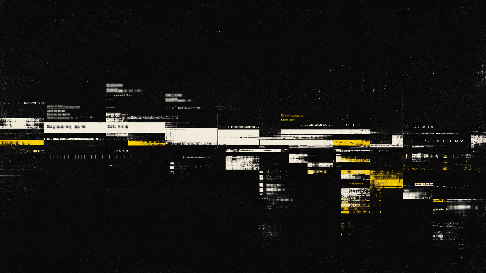
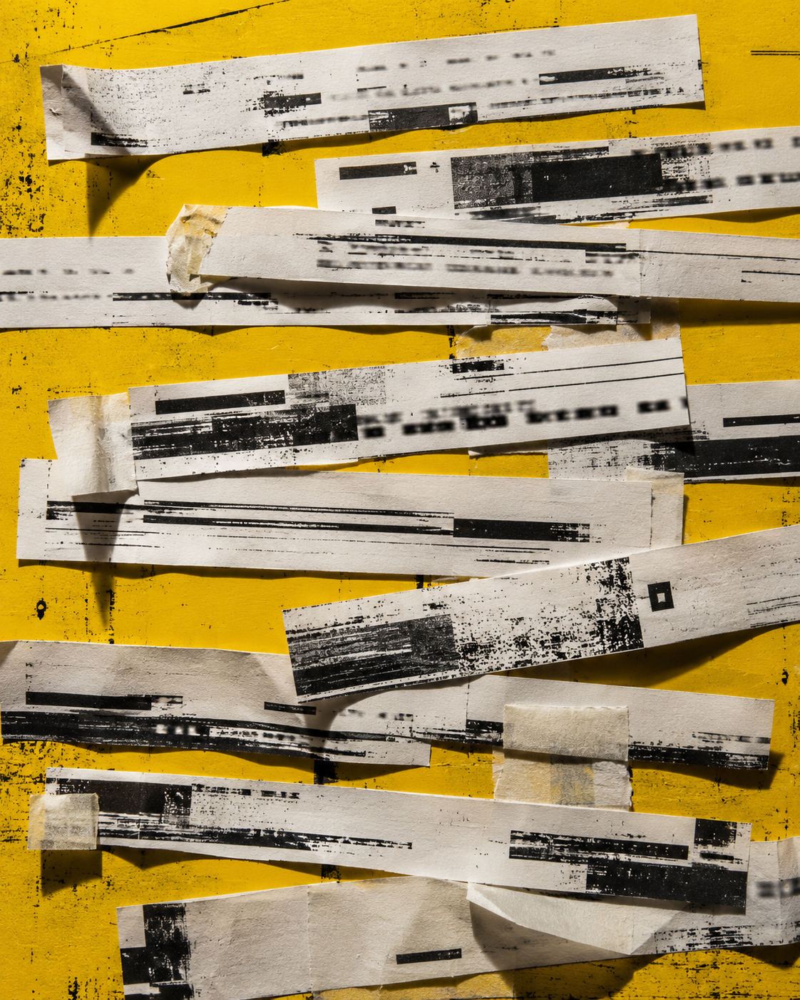
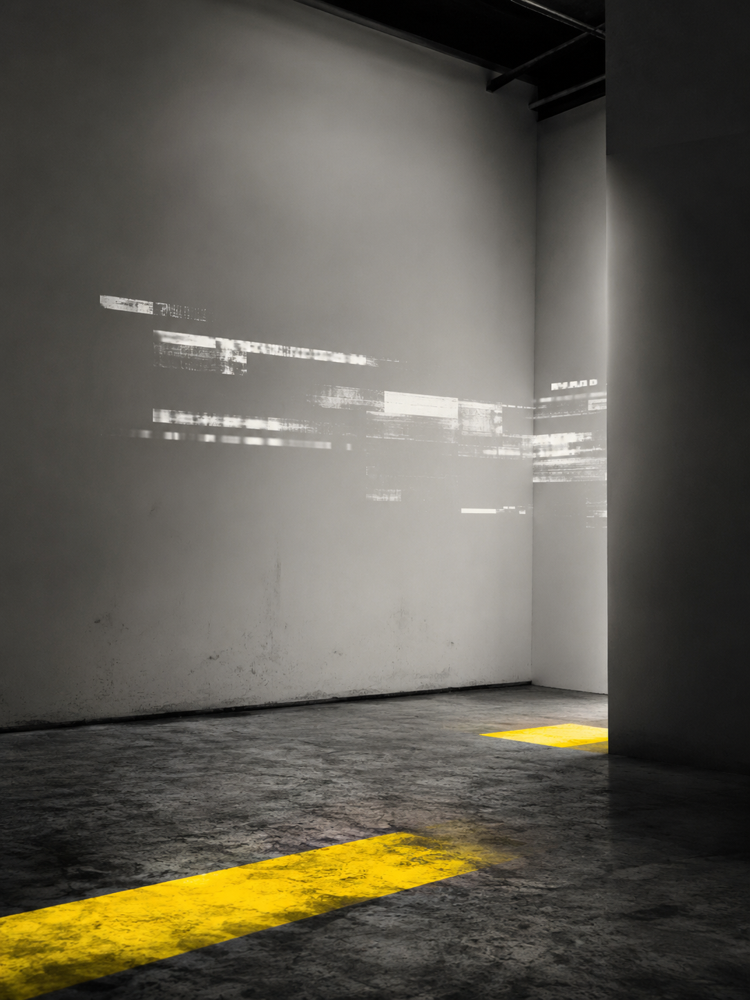
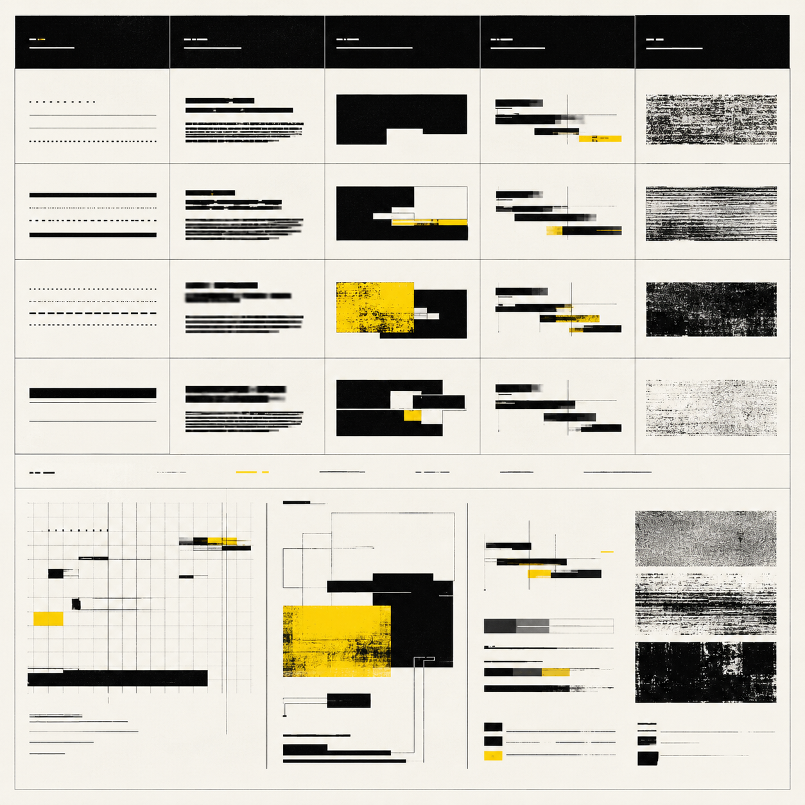

视觉方法 / PROCESS
通过裁切、重叠、延迟与重复测试同一段文字，比较不同破坏程度对阅读路径的影响。
A02 · TYPE
破损字幕
主动将文字断裂、重复与错位以形成特殊的视觉节奏。

“A02 BROKEN CAPTION｜破损字幕”以字幕条、注释框、时间码与系统报错信息为基础材料，通过裁切、错位、覆盖、重复和局部删除，重新组织原本用于传递内容的文字结构。画面保留信息正在更新和播放的外观，却主动破坏句法、顺序与阅读路径，使文字转化为断续的视觉节奏。项目试图讨论：当信息持续出现而意义无法完整抵达时，观看者如何判断内容仍然存在。
通过裁切、重叠、延迟与重复测试同一段文字，比较不同破坏程度对阅读路径的影响。
为了满足个人好奇心的实验性产物。



